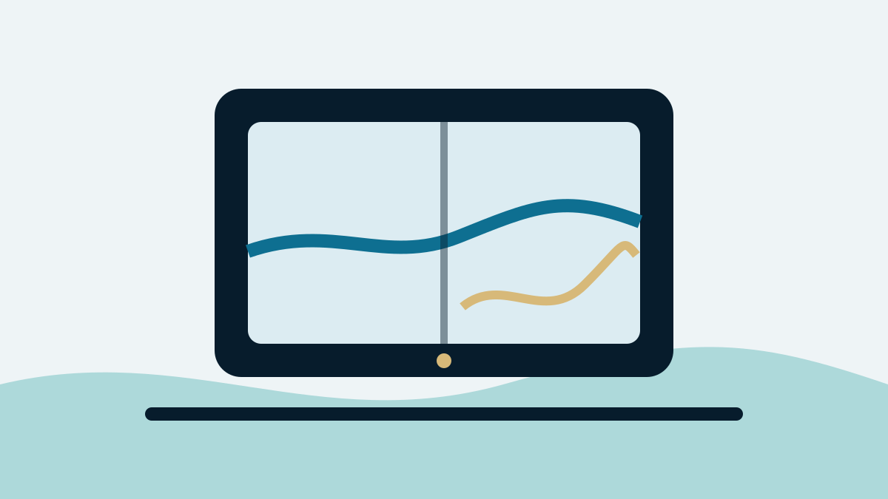

Editorial disclosure: Recommendations are chosen for fit, safety and long-term usefulness. Retail links may be affiliate links, which can support Nautical Dream without changing the price you pay or our editorial judgment. Specifications and prices change; verify the exact model and package before ordering.
Affiliate disclosure: Nautical Dream may earn a commission from qualifying purchases made through marked retail links, at no additional cost to you. Recommendations remain editorially independent. As an Amazon Associate I earn from qualifying purchases.
The chartplotter decision usually goes wrong before the box is opened. A buyer sees a bright display under store lighting, compares diagonal inches and assumes the expensive unit will solve navigation. On the boat, polarized sunglasses darken the screen, a steering wheel blocks the lower corner and the transducer bundled with the sale does not suit the hull. Buying well means treating the display, charts, sonar, network, power and installation as one system.
The short list—and who each unit is for
Garmin ECHOMAP UHD2 7- or 9-inch
Approachable controls, strong inland mapping options and a broad accessory ecosystem make the UHD2 family a sensible starting point for family cruising and fishing.
- Easy learning curve
- Multiple sonar bundles
- Compact helm fit
Simrad GO9 XSE
A clean nine-inch touchscreen with radar and NMEA 2000 growth potential for sportboats and small cruisers.
- Useful split-screen space
- Radar capability
- Multiple C-MAP bundles
Raymarine Axiom 2 Pro
HybridTouch controls, powerful networking and multiple sonar configurations suit a serious coastal or offshore helm.
- Touch plus physical control
- Radar, AIS and camera expansion
- Larger display sizes
These are starting points, not a universal podium. A Garmin boat already wired for compatible sensors may be cheaper to upgrade within Garmin. A Simrad radar owner should count the cost of abandoning that network. A Raymarine display is not “better” when its capability will remain unused on a sixteen-foot lake boat.
Quick comparison
| System | Best use | Strength | Tradeoff | Typical total project |
|---|---|---|---|---|
| ECHOMAP UHD2 7/9 | Inland cruising and fishing | Approachable mapping/sonar ecosystem | Seven inches feels tight in split view | About $700–$2,000 depending on bundle and labor |
| Simrad GO9 XSE | Sportboat or small cruiser | Nine-inch screen and future radar | Touch-only operation is less friendly in hard chop | About $1,200–$3,000; radar bundles cost more |
| Axiom 2 Pro | Networked coastal helm | Hybrid controls and serious integration | Higher hardware and installation cost | Often $3,000–$8,000+ as a system |
The project ranges are deliberately broad. Display price is only the beginning. A transducer, charts, NMEA 2000 backbone, radar cable, mounting plate, circuit protection and professional labor can equal or exceed the cost of a midrange screen.
Who should buy—and who should wait
Buy a new chartplotter when the current unit is unreadable, unsupported, missing trustworthy charts for the operating area or incapable of integrating safety equipment the boat genuinely needs. A larger screen can also be justified when the captain regularly uses chart and sonar together or when aging eyes make small text a safety issue.
Avoid upgrading merely because a new processor scrolls faster in a demo. If the present unit is reliable, the chart is current and the operator knows it thoroughly, training and a tablet-based planning workflow may produce more value. A boater who has not learned to drop a waypoint, build a route, change range and find tide or depth information will not become safer by buying a more complicated menu.

Screen size: use cardboard before money
Cut cardboard to the manufacturer’s full case dimensions and tape it at the proposed helm. Sit, stand and turn the wheel. Check sightlines, switch access, throttle movement and the space needed to remove the chart card or cover. Look behind the dash for cable-bend radius and connectors; a screen that fits on the front may be impossible to service from behind.
Seven inches is workable for a compact inland helm when the display normally shows one pane. Nine inches is a meaningful improvement for chart/sonar split view and larger touch targets. Twelve inches and above become valuable when radar, cameras, engine data and multiple navigation panes share the screen. Buying a giant display that forces the captain to look down instead of out is not an upgrade.
Touchscreen, keys or both
Touch is fast in calm water. Pinch-to-zoom feels familiar, and a clean glass face is easy to wipe. Wet fingers, gloves and hard motion expose the limitation: precise touches become difficult exactly when the captain needs them. Keyed interfaces take longer to learn but provide tactile reference. Hybrid systems cost more and occupy more case area, yet physical range keys and a rotary controller can be worth that space on an exposed helm.
Try the interface while wearing the sunglasses and gloves used aboard. Practice returning to the chart from an unfamiliar page. Any regular operator should be able to mark the boat’s position, zoom, silence a noncritical alarm and restore a basic navigation view without the owner standing beside them.
Charts are a continuing expense
“Preloaded charts” can mean different regions and different levels of detail. Verify the exact package number, coverage and whether advanced layers require a subscription. Garmin’s inland and coastal bundles, C-MAP packages and Raymarine LightHouse or compatible third-party charts each have different update paths. Some include a limited period of updates; none should be assumed current forever.
Budget for chart updates throughout ownership. Save route and waypoint backups outside the display before an update or service visit. Crowd-sourced depth layers can be useful but should never overrule official charting, local notices or what the captain sees. The display is an aid to navigation, not a certification that a route is safe.
Sonar bundles: where bargains become expensive
The same display can be sold alone or with several transducers. A transom-mount traditional/CHIRP transducer may suit a trailer boat; side-scan adds fishing information but requires careful placement; a through-hull sensor can produce better high-speed depth on an appropriate hull but adds drilling, haul-out and installation cost. Hull material and deadrise affect the choice.
Read the full SKU. Confirm frequencies, connector, cable length and included mounting hardware. Do not assume “3-in-1” means every desired view works at every speed. Owners frequently blame the screen for turbulence caused by poor transducer location. Installation quality is part of sonar performance.

Networking and ecosystem lock-in
List what may be added during the next three years: AIS, VHF position sharing, radar, autopilot, engine data, audio control, cameras or a second display. Check NMEA 2000, NMEA 0183 and manufacturer Ethernet requirements. “NMEA 2000 compatible” does not mean every proprietary radar or sonar module works across brands.
Staying in one ecosystem usually reduces adapters, duplicated sensors and support arguments. That lock-in has value and cost. Before switching brands, inventory every cable and device that will become orphaned. On an older boat, replacing a brittle network and questionable power feed may be smarter than adapting around it. On a healthy network, an incremental same-brand update is often the least expensive long-term choice.
Installation: what a clean job includes
A professional-grade installation includes marine-rated wire sized for the run, dedicated overcurrent protection, sound terminations, drip loops, connector access, strain relief and separation from interference sources where practical. The display needs a power feed that remains stable during engine cranking. The transducer cable should not be cut or coiled carelessly, and network backbones require correct power and termination.
Flush mounting looks integrated but makes service harder and creates an irreversible hole. A bracket offers adjustment and simpler replacement but consumes helm space. Seal every penetration appropriately. If the project involves a through-hull, radar aloft, structural cutting or unclear electrical capacity, use a qualified marine installer. Saving labor does not justify a leak or an intermittent navigation system.
Budget recommendation
For a small lake boat, the rational budget package is often a seven-inch ECHOMAP UHD2 with the correct inland chart and a basic transducer matched to fishing needs. Spend first on a readable mount, proper power and the right map region. A nine-inch sale unit with the wrong charts and transducer is not a value.
Another budget route is keeping a reliable existing depth sounder and adding a modest chart display without integrating every system. A protected phone or tablet can supplement planning, but it should not be the only navigation source on a route where heat, water, battery life or loss of cellular coverage can end the display.
Premium recommendation
Axiom 2 Pro makes sense when physical controls, radar, AIS, cameras, autopilot and multi-display networking are part of a real coastal plan. Choose Pro S for cruising-oriented sonar needs or the appropriate RVM configuration for more advanced fishing, then have the complete network designed before ordering boxes.
Premium money should buy redundancy and usability, not a larger logo. Keep an independent position source, paper or offline backup chart and a VHF that remains functional if the multifunction display fails. A second display sharing the same power and network is convenient, but it is not fully independent.

Common failures and what they usually mean
Random reboots often point to low voltage, undersized wire, corrosion or a weak connection rather than a defective processor. Lost sonar can come from connector damage, network power, a fouled transducer or turbulent water. Position jumping may involve antenna view, interference or software. Fogging, delamination and unresponsive touch are hardware concerns that deserve warranty evaluation.
Diagnose methodically. Record voltage at the unit during cranking, inspect grounds and network terminators, photograph error messages and note whether failure changes with engine speed or wave impact. Blindly replacing the screen can leave the actual power problem ready to damage the next one.
Long-term ownership and maintenance
Update software only after reading release notes, backing up user data and ensuring stable power. Do not begin a major update five minutes before departure. Keep chart subscriptions and account credentials documented. Remove a bracket-mounted display for secure winter storage if the manufacturer and installation allow it; protect exposed connectors with approved caps.
Wash salt with fresh water using the manufacturer’s guidance, clean the screen with a safe microfiber method and avoid harsh chemicals. Inspect cables, seals and mounts annually. Confirm the date and condition of transducer antifouling where applicable. The useful life of a chartplotter depends as much on supported charts, connector health and owner discipline as raw processor speed.
Buying mistakes we see repeatedly
- Choosing by diagonal screen size without measuring the complete case and cable space.
- Ordering a discounted bundle before confirming chart region and transducer.
- Assuming radar, autopilot or sonar modules work across brands because all mention NMEA 2000.
- Spending the installation budget on a higher model, then using poor wire and a crowded circuit.
- Adding features without training the second operator.
- Discarding the old unit before exporting waypoints and routes.
The cure is a one-page system plan listing every device, connection, included chart, transducer and future expansion. Get the plan reviewed before the return window closes.

Alternatives and final verdict
Lowrance, Humminbird and Furuno deserve consideration depending on fishing style, commercial heritage or an existing network. A dedicated fishfinder plus simpler navigation display can be better than one overloaded screen. For sailors, B&G’s sailing data and route tools may fit better than a fishing-oriented bundle.
Final verdict: Most inland family boats should buy a seven- or nine-inch display with current charts, correct transducer and clean power. Small cruisers gain real usability from nine inches and network planning. Serious coastal boats justify hybrid controls and integrated radar/AIS only with training and redundancy. The best chartplotter is the least complicated system that fully supports the water you actually run.
Frequently asked questions
What size chartplotter is best for a small boat?
Seven inches works for a compact helm and a single main view. Nine inches is more comfortable for chart-and-sonar split screens. Mock up the full case size before buying.
Can I install a chartplotter myself?
A competent owner can complete a simple bracket and transom-transducer installation with proper marine wiring. Through-hulls, radar, structural cutting and complex networks are better assigned to a qualified installer.
Do chartplotters work without cellular service?
Yes. Marine chartplotters use satellite positioning and locally stored charts. Connected apps may require data for downloads or supplemental services, so install charts and updates before departure.
How often should charts be updated?
Update before trips in unfamiliar or changing waters and review official Notices to Mariners. The appropriate frequency depends on where the boat operates and the chart provider’s program.
Is a tablet a substitute for a chartplotter?
A tablet is an excellent planning and backup tool but can overheat, lose power or be difficult to use in spray. It should not be the only navigation source where failure creates meaningful risk.